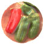
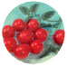

All-America Selections is the oldest seed testing organization in North America, as well as our personal favorite. Trials have been conducted by AAS every year since 1932 and can involve as many as 200 test gardens.
The only reason to grow your own sweet corn is flavor and Honey Select has flavor and ease of growth . Unlike other supersweet types, Honey Select does not require isolation from other corn pollen. Maturing in about 79 days, gardeners will find yellow Honey Select ears about eight inches long. Mature ears can be harvested over a longer time without loss of eating quality.
The Giant Marconi is an improved Italian grilling pepper. About six to eight inches long, the tapered green pepper will mature to red on the 30-inch plant. The Giant Marconi tastes excellent raw but is best when grilled. It has a memorable sweet, smoky flavor. It was judged best in its class for earliness, yield, pepper size and flavor. Green peppers can be harvested in about 72 days after transplanting.
The Jolly is a delicious, new pink tomato. The vigorous indeterminate vines produced abundant clusters of 1 1/2-ounce peach shaped fruit. Gardeners can expect nine to 14 tomatoes per cluster. Jolly plants yield ripe fruit about 70 to 75 days after transplanting. Jolly will produce the highest quality tomatoes if vines are pruned and tied to vertical support. "Jolly" plants are easy-to-grow, offering meaty, sweet, pink tomatoes fresh from your garden.
|
|
 |
 |